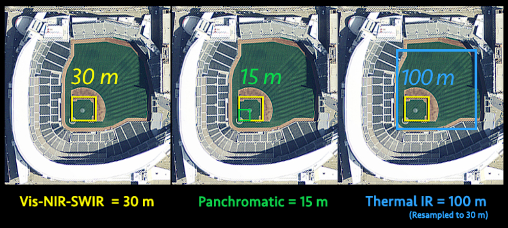
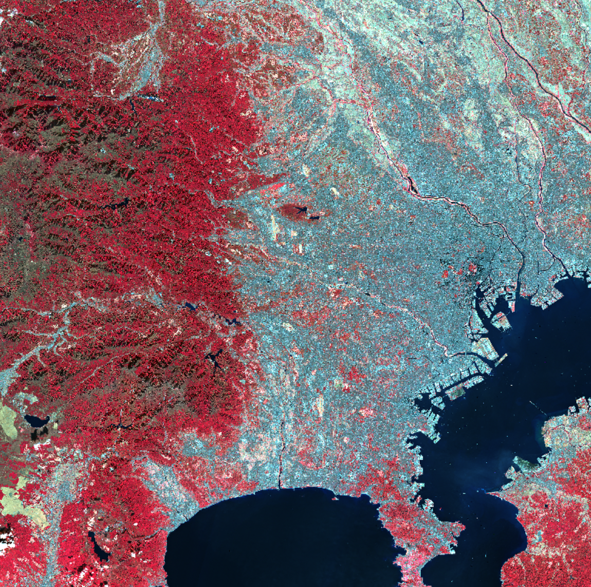
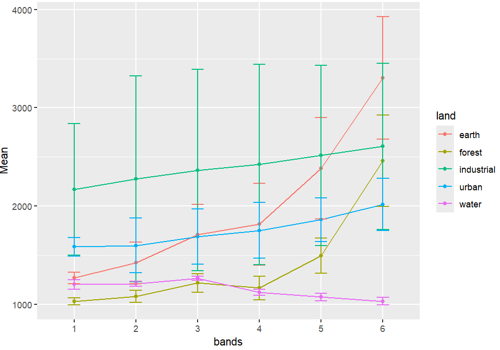
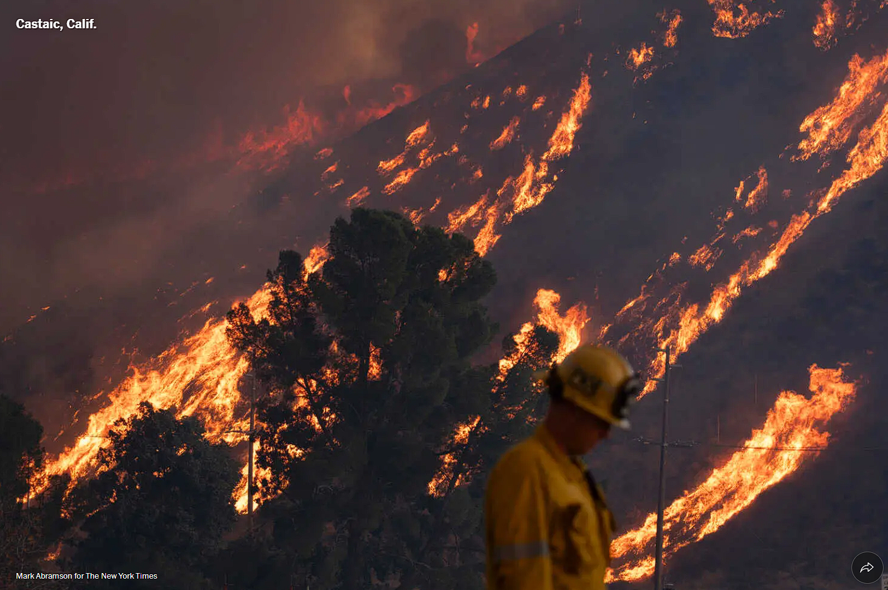

1 Week 1: Getting started with Remote Sensing
2 Introduction
The first week of Remote Sensing covers the definitions of remote sensing, what we can do with remote sensing and the technology behind it. The basic understanding of remote sensing is a definition by NASA: “acquiring information from a distance” which is quite broad. This means that even taking a photograph using mobile phones is considered remote sensing. However, the course is centred around satellite images and data, which covers a much larger area in specific areas of the earth and there are a wide range of tools, methods and data sources to choose from when analysing satellite data.
For example, there are many different sources of open satellite data that is available for analysis such as MODIS from NASA, Landsat-8 from USGS, and Sentinel-2 from the European Space Agency. They all capture data at different resolutions and capture different data types based on their sensor technologies.
 Landsat-8 with its different sensors and resolutions. Source: NASA
2.1 Sensors
Two broad categories of sensors are active sensors and passive sensors. Passive sensors rely on reflect energy from the sun and thus needs to operate in the day, while active sensors can emit electromagnetic waves, and hence can be operated in the night, giving unique products like Nighttime satellite imagery. Synthetic Aperture Radar, a type of passive sensor, is also known for its all-weather penetration ability and thus is suitable for continuous monitoring. A lot of post-processing of the data also occurs behind the instruments; satellite data download typically has atmospheric corrections applied to it (e.g Landsat Level 2 surface reflectance rather than TOA) so that the data quality is enhanced and suited for scientific analysis.
The practical covers the comparison between two sources of satellite data – Sentinel-2 and Landsat-8. They contain different products which determines the different resolutions in terms of spatial, spectral, temporal and radiometric.
The city of choice used in this practical is Kanagawa, Japan. It sits south of the Tokyo metropolitan ward, and has a diverse landuse cover ranging from heavy industries near the sea, to residential and the mountainous region to the west. The different band combinations of the satellite data can be used for various analytical functions, such as to identify a specific land use or soil health for example.
 False colour composite of Kanagawa which helps identifying greenery, soil and water bodies. Image produced with data from Landsat-8, processed in SNAP.
Another key concept is spectral signatures. Since different objects on the ground reflect electromagnetic waves differently across different wavelengths, we can capture the reflectance and associate it with a particular land use. Green vegetation absorbs red wavelengths but reflect NIR waves for example.
 Spectral bands of various land use covers. Image produced with data from Landsat-8, processed in RStudio.
The graph above is obtained from identifying (visually) various land use cover by drawing boundaries around them, and extracting the range of spectral signatures across the 6 bands. But this is just 5 land cover types. I presume the accuracy and box plot for each band will be smaller with more data put into identifying land uses since I did a pretty quick identification visually.
2.2 Applications
A systematic review of remote sensing literature using Landsat-8 data was published by Hemati et al. (2021) which covers the trends, opportunities and future of using Landsat-8 data for various studies. The key takeaway is that the single most important feature of remote sensing is land use change, which 60% are attributed to human activities like industrialisation and urbanisation. Monitoring land use changes can yield important insights into how these processes are unfolding. The advancement of cloud computing platforms such as Google Earth Engine makes analysing satellite data over large areas across time possible and much easier than ever before. This was seen in how the number of images used per articles skyrocketed since 2000s with increased computation power. The most common land use change detection carried out is deforestation and urban expansion, and many data sources are often fused to improve data resolution of various products. Hemati et. al (2021) reports that Sentinel-2 and MODIS data are often fused with Landsat-8, thereby reaping benefits of different data sources – Sentinel for better spatial resolution and Landsat-8 for historical continuity for example.
An example of this is an algorithm developed by Gao et. al (2006) which fuses MODIS and Landsat-8 data to overcome limitations which previously hindered researchers from studying temporal patterns of plant and farming cycle/patterns. Of course, these applications are just merely scratching the surface of what remote sensing data can achieve. However, the worsening climate change and associated extreme climate events mean that remote sensing is becoming more important than ever before which can help understand and provide potential solutions and management tools.

2.3 Reflections
I previously worked used satellite data during my internship in the Housing Development Board in Singapore just before entering university. There are some quite real implications for policies and uses of satellite data in Singapore just because it built so densely. I was tasked with building a model to predict Land Surface Temperature, using factors such as land use classes, sky-view factors and impervious surface area. Machine learning algorithms was employed to predict land use classification in Singapore, using a smaller town as a training site.
Due to the sheer density of the built environment in Singapore coupled with climate change, thermal comfort becomes a large problem living in Singapore and urban planners are looking into using satellite data to help inform the factors which affect land surface temperatures. With the model, planners can better understand the land use mix, configurations of tall buildings, and other elements which affects the built environment layout that can minimise heat retention in urban settings.
Although I worked with these remote sensing data before, I did not know the technical index of the different datasets and even the sensors of the satellites. I am glad that learning remote sensing again ‘from scratch’ enable me to really examine how the data is captured and processed in depth, and appreciate the calibrations and issues with mapping the Earth.
Another interesting project I heard was identifying rooftops that are suitable for solar panel installations using satellite imaging. Similarly, this has policy implications such as climate change agreements, or the net zero policies in place. Instead of exhausting manpower to check rooftops, satellite imaging, with an algorithm, can identify rooftops with sufficient areas for solar panel retrofitting.
These are just two projects that utilises land use classes of satellite data to help inform real world problems and policy implementations.